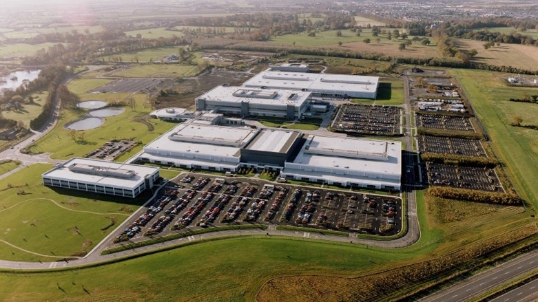

L'entreprise
Hewlett-Packard Company, officiellement abrégée en HP, est une entreprise multinationale américaine initialement d’électronique et d'instrumentation qui évolue au cours du temps vers l'informatique, les imprimantes, les serveurs et réseaux, le logiciel et le multimédia.
Publicité pour le PC portable ultra-fin HP ENVY :
Secteurs d'activité :
HP est une société spécialisée dans le secteur informatique. C'est l'un des leaders dans la fabrication et la commercialisation de matériel informatique dans le monde.
- 28.8% ordinateurs et systèmes d'exploitation
- 28,6% services informatiques
- 20,2% équipements d'imagerie et d'impression
- 16,1% serveurs, logiciels de gestion
- 3,2% autres
- 3,1% services financiers
Direction Comités :
Le Président-Directeur Général d’HP est Margaret C. Whitman. Elle préside le Conseil d'Administration composé
de 9 membres qui s’appuie sur 5 comités.
Conseil d’administration : Marc Andreessen, Shumeet Banerji,
Rajiv Gupta, Raymond Lane, Ann Livermore, Gary Reiner, Patricia Russo, Margaret Whitman et Ralph Whitworth
Comités :
- Le comité d'audit (3 membres)
- Le comité de finance et d'investissement (4 membres)
- Le comité de Ressources Humaines et de rémunération (3 membres)
- Le comité de nomination et de gouvernance (5 membres)
- Le comité technologique (5 membres)
Parts de l’entreprise :
HP une société cotée à la bourse de Wall Street. Répartition du capital d’HP est de 99% flottant et 1% pour les dirigeants et administrateurs.
Sites de production :
HP fait appel à des sous-traitants pour fabriquer des ordinateurs personnels. L'assemblage d’ordinateurs est réalisé en Chine (par Compal Electronics, Foxconn, Inventec, Micro-Star International, MiTAC, Pegatron, Quanta Computer, TPV-Inventa Technology et Wistron), en République Tchèque (par Foxconn), au Mexique (par Foxconn).
En 2017, HP ferme son usine de Leixlip en Irlande qui produisait des cartouches pour imprimantes. Cette fermeture entraine la perte de 500 emplois.